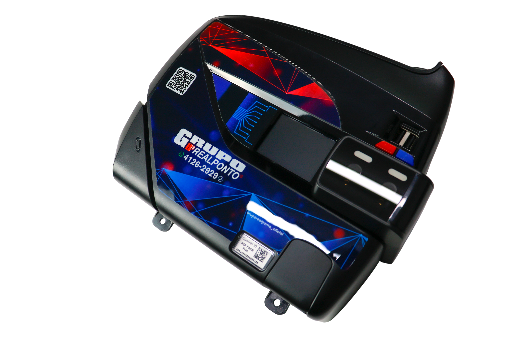
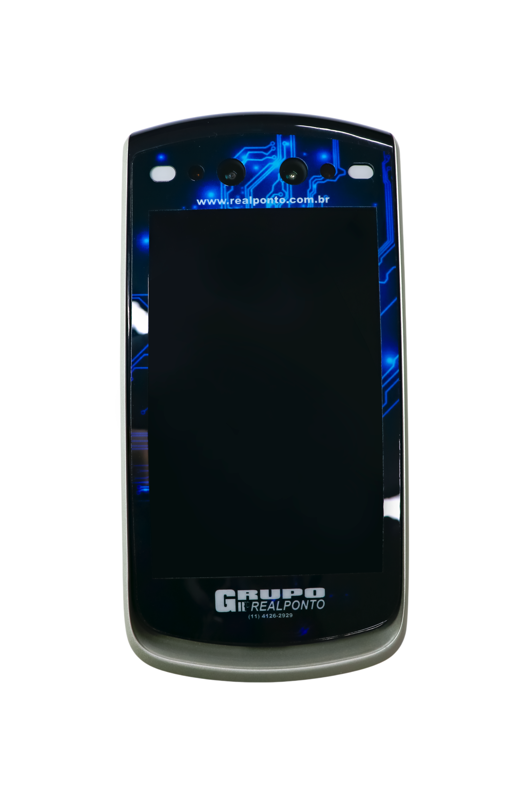
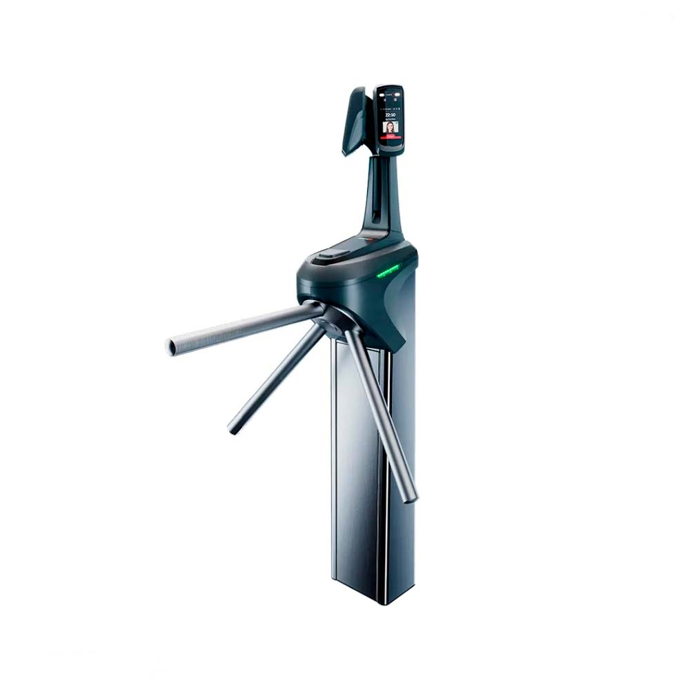
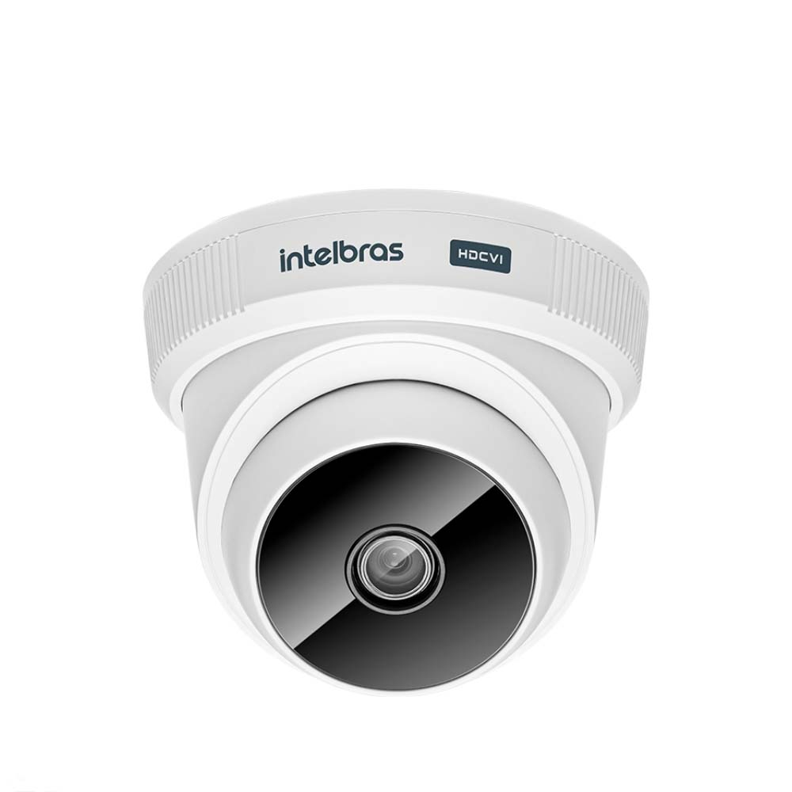
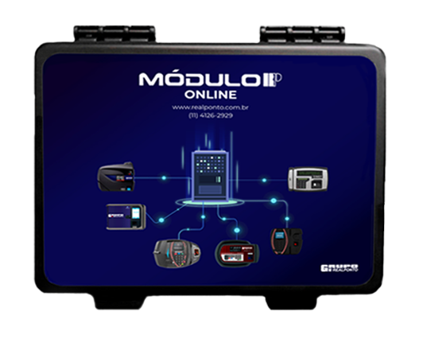
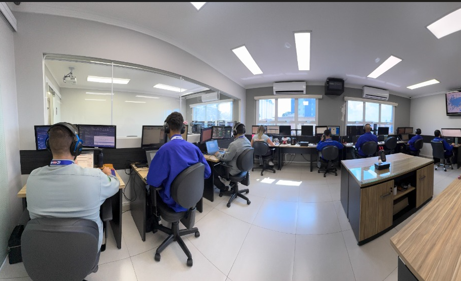
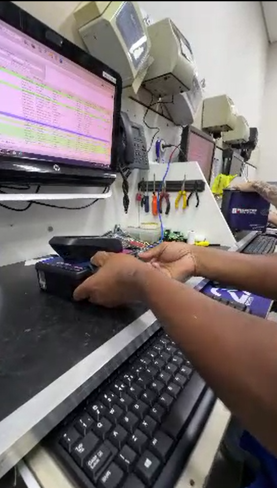
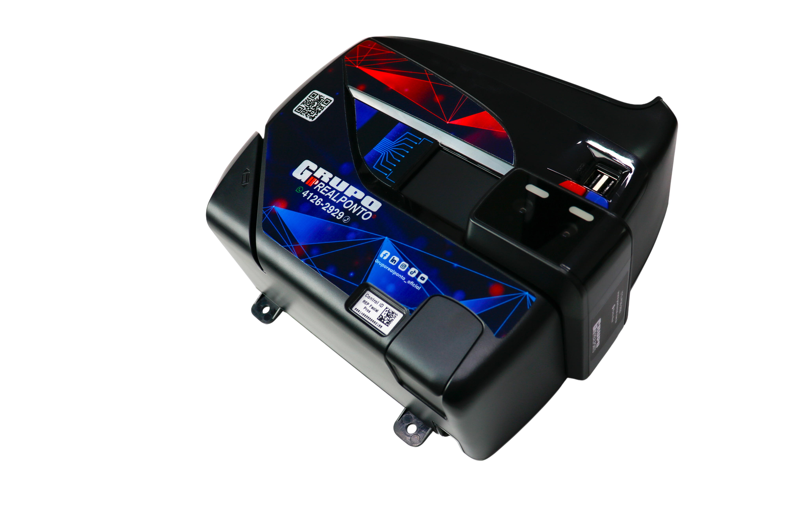
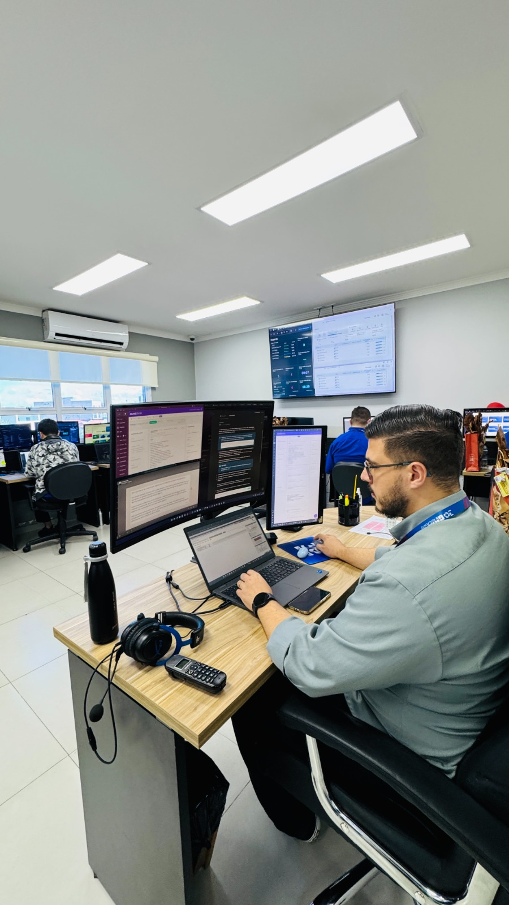

Suporte técnico
Suporte humanizado para auxiliar nos problemas do dia a dia, com experiência e inteligência.
Saiba mais →Soluções completas em controle de ponto, acesso facial, catracas e sistemas de gestão, com implantação e assistência técnica de quem entende do assunto.




Projetos ajustados ao tamanho e à rotina da sua empresa, com equipamentos, software, implantação e suporte em um só lugar.
Suporte humanizado para auxiliar nos problemas do dia a dia, com experiência e inteligência.
Saiba mais →Manutenção e conserto de relógios de ponto, com laboratório próprio, diagnóstico técnico, peças e atendimento especializado.
Saiba mais →Relógios eletrônicos, biométricos, reconhecimento facial e soluções adequadas à rotina da sua equipe.
Saiba mais →Apuração, banco de horas, assinatura eletrônica e informações acessíveis de qualquer lugar.
Saiba mais →Controle facial, biométrico, catracas, câmeras e portaria remota para maior segurança no dia a dia.
Saiba mais →Criação e aplicação de elementos visuais para fortalecer a apresentação e a comunicação da sua empresa.
Saiba Mais →
Automatize o envio das marcações do relógio e tenha informações atualizadas para o fechamento do ponto.
Os dados são enviados sem a rotina de pendrive.
Reduza esquecimentos e atrasos no envio das marcações.
Facilite a operação do RH e o acompanhamento das unidades.
Da escolha da tecnologia ao suporte após a implantação, nossa equipe acompanha sua empresa em cada etapa.

✓ Equipe técnica qualificada
✓ Laboratório próprio
✓ Marcas reconhecidas
✓ Atendimento consultivoAnalisamos quantidade de colaboradores, locais, jornadas e regras de acesso antes de recomendar a solução.
Instalação, parametrização e orientação para sua equipe começar com segurança.
Atendimento técnico para resolver problemas e manter os equipamentos em funcionamento.
Equipamentos e sistemas que trabalham juntos para reduzir atividades manuais.
A RealPonto é uma empresa fundada em 1996, referência no fornecimento e assistência técnica de relógios de ponto e sistemas das principais marcas do mercado, também com grande expertise em segurança eletrônica e identidade visual. Apoiada em infraestrutura própria e equipe qualificada, sua missão é entregar soluções tecnológicas com excelência, ética e alto custo-benefício para garantir a segurança de seus clientes. Em todos os setores da RealPonto contamos com profissionais técnicos e qualificados, a fim de prestar a melhor manutenção e assistência. Além disso, contamos com um laboratório próprio, o que nos permite ter agilidade e qualidade na assistência técnica, liderando o mercado e oferecendo as garantias necessárias aos nossos clientes.
Uma indústria, um escritório e um condomínio têm necessidades diferentes. A tecnologia precisa acompanhar essa realidade.
Jornadas complexas, turnos e múltiplos acessos.
Gestão prática, nuvem e ponto pelo celular.
Moradores, visitantes, prestadores e áreas restritas.
Acesso seguro para alunos, equipe e visitantes.
Escalas, plantões e segurança em áreas críticas.
Dados centralizados e gestão de múltiplas unidades.
Você não precisa conhecer todos os equipamentos. Nossa equipe ajuda a identificar a opção mais adequada.
Levantamento da estrutura, quantidade de usuários e objetivos.
Equipamentos, software, instalação e serviços necessários.
Configuração, instalação, testes e treinamento da equipe.
Suporte técnico e manutenção para manter tudo funcionando.
Veja algumas dúvidas recorrentes dos nossos clientes.
A indicação depende da quantidade de funcionários, jornadas, locais de trabalho, necessidade de mobilidade e integração. A RealPonto pode analisar o cenário e apresentar as opções mais adequadas.
Sim. A proposta pode incluir instalação, configuração, parametrização e orientação para os usuários responsáveis pela operação.
Sim. A RealPonto trabalha com assistência técnica, manutenção preventiva e corretiva e suporte para diferentes marcas e modelos.
Sim. Soluções em nuvem e coleta online permitem centralizar dados de diferentes locais, facilitando a gestão do RH e dos acessos.
Você pode falar diretamente pelo WhatsApp ou telefone. Informe o tipo de solução, quantidade aproximada de usuários e local de instalação para agilizar o atendimento.
A Portaria 671 modernizou o controle eletrônico de jornada, consolidando os modelos REP-C, REP-A e REP-P e ampliando o uso de novas tecnologias, como registros de ponto por dispositivos móveis e sistemas em nuvem. As atualizações mais recentes do Ministério do Trabalho reforçam a segurança, integridade e rastreabilidade das marcações, além de atualizar os padrões dos arquivos digitais AFD e AEJ, cujos novos leiautes foram disponibilizados em julho de 2026.
Sim! Oferecemos o serviço de locação de relógios de ponto. Essa modalidade isenta a sua empresa de um alto investimento inicial e unifica tudo em uma assinatura mensal. O contrato de locação já inclui a garantia total de manutenção do equipamento em caso de defeitos e suporte técnico especializado para o fechamento da folha e dúvidas de operação. Fale com um de nossos consultores para solicitar uma cotação.
Fale com a equipe da RealPonto e receba uma orientação ideal para o seu negócio.